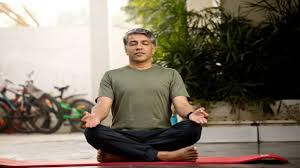

Top Yoga Poses for Stress Relief 🌿
These poses are designed to ease anxiety, relax your muscles, and calm your mind.

Child’s Pose (Balasana)
Gently stretches the back and calms the nervous system.
Legs Up the Wall Pose (Viparita Karani)
Relieves tired legs and calms the mind.
Cat-Cow Pose (Marjaryasana–Bitilasana)
Relieves spine tension and enhances breath flow.

Seated Forward Fold (Paschimottanasana)
Calms the brain and stretches the entire back body.
Corpse Pose (Savasana)
Best for deep rest and stress reduction.
Bridge Pose (Setu Bandhasana)
Opens the chest and gently stimulates thyroid function.

Easy Pose with Forward Bend (Sukhasana)
Releases neck and upper back tension.

Reclined Bound Angle Pose (Supta Baddha Konasana)
Opens hips and chest for emotional release.
Standing Forward Bend (Uttanasana)
Soothes the nervous system.

Alternate Nostril Breathing (Nadi Shodhana)
Balances the brain and reduces anxiety.
Incorporating these yoga poses into your daily routine can help bring peace, clarity, and emotional balance.